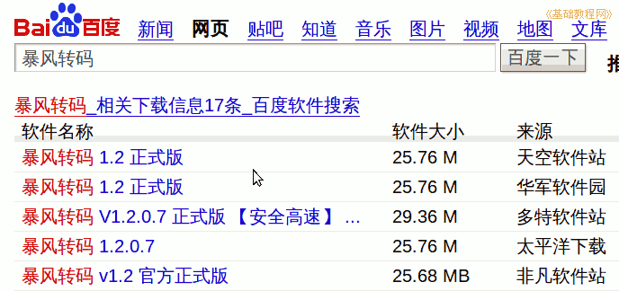
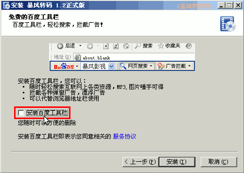
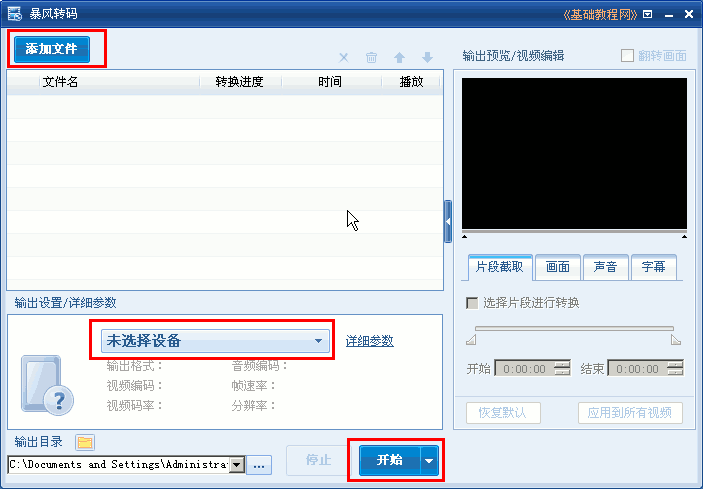
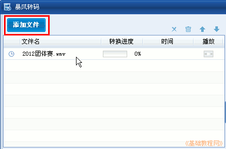
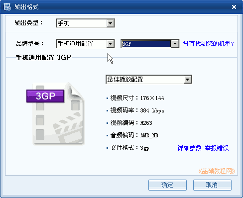
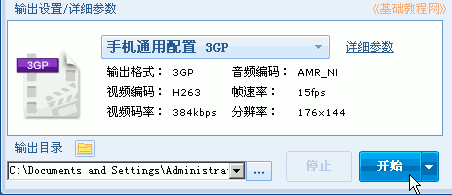
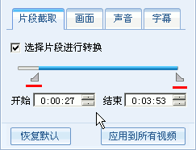

视频编辑 基础入门教程
十一、暴风转码 返回目录
使用暴风转码可以将视频进行格式转换，比如手机格式、Flv和电脑通用格式等，下面我们来看一个练习，
1、下载和安装
1）在百度中搜索“暴风转码”，在出来的页面中点击进入下载页面，文件大约有25M左右；

2）双击下载的安装包，在打勾的地方多细心，去掉多余的安装项；

3）安装完成后，点击运行，出来一个窗口，左边依次是选择文件、选择格式和开始转换，右边是播放窗口；

4）点左上角的“添加文件”按钮，选择要转换的视频文件，本课有一个范例(下载)；

5）在弹出的转换格式中，选择手机通用配置、3GP，这个在各种手机上都可以播放，然后点“确定”；

6）回到主窗口后，点下边的“开始”按钮，转换后的文件存放在“我的文档--暴风转码”文件夹中；

7）在右边的播放面板中，可以设置转换的起点和终点，打勾“选择片段进行转换“，拖动游标或者点击时间后，进行微调；

本教程由86团学校TeliuTe制作|著作权所有
基础教程网：http://teliute.org/
美丽的校园……
|
|
|
|
|
|
转载和引用本站内容，请保留作者和本站链接。